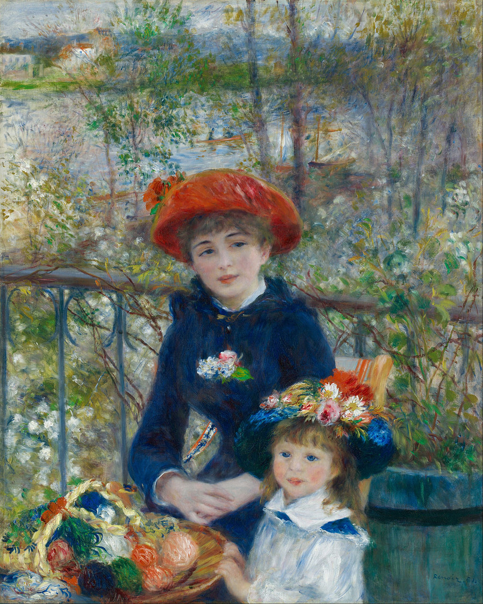

<head>
<meta charset="UTF-8" />
<meta name="keywords" content="drawing, painting" />
<meta name="description" content="drawings by Sunjy" />
<title>Sunjy</title>
<link rel="shortcut icon" type="image/x-icon" href="../../mImages/mCommon/favicon.ico" media="screen" />
<link rel="stylesheet" type="text/css" href="../../mCsses/mCommon/mCssA.css" />
<link rel="stylesheet" type="text/css" href="../../mCsses/mCommon/mCssB.css" />
<link rel="stylesheet" type="text/css" href="../../mCsses/mCommon/mCssC.css" />
<link rel="stylesheet" type="text/css" href="../../mCsses/mCommon/mCssD.css" />
<link rel="stylesheet" type="text/css" href="../../mCsses/mContent/mCssA.css" />
<link rel="stylesheet" type="text/css" href="../../mCsses/mContent/mCssB.css" />
<link rel="stylesheet" type="text/css" href="../../mCsses/mContent/mCssC.css" />
<link rel="stylesheet" type="text/css" href="../../mCsses/mContent/mCssD.css" />
</head>
<script type="text/javascript" src="../../mScripts/mContent/mContentAA.js" /></script>
<script type="text/javascript" src="../../mScripts/mContent/mContentAB.js" /></script>
<script type="text/javascript" src="../../mScripts/mContent/mContentAC.js" /></script>
<script type="text/javascript" src="../../mScripts/mContent/mContentAD.js" /></script>
<script type="text/javascript"></script> 
<script type="text/javascript">
document.write('<div class="mImgAbsolute"></div>');
/*
document.write('<p class="mFontSizeBColor" />From a white paper...</p>');
document.write('<table class="center"><tr><td>');
document.write('');
document.write('</td></tr></table>');
*/
</script>


<script type="text/javascript">
document.write('<p class="mFontSizeBColor" />Two Sisters</p>');
document.write('<p class="mFontSizeSColor" />“Two Sisters” by Pierre-Auguste Renoir depicts the upper terrace of the Maison Fournaise, a family restaurant located on an island in the Seine in Chatou, the western suburb of Paris.<br><br>The painting shows a young woman and her younger girl seated outdoors with a small basket containing balls of wool. In the background over the railings of the terrace, are flowering plants and vines.<br><br>Beyond is the River Seine with its boats and also some buildings in the top left. Renoir painted this delightful scene as a homage to springtime in 188. He or his art dealer called it “Two Sisters.”<br><br>The first owner of the painting used its alternative title, “On the Terrace.” Jeanne Darlot (1863—1914), a future actress who was 18 years old when she posed for the elder sister.<br><br>The identity of who represented the younger sister is not known as they were not real sisters. Before working on Two Sisters, Renoir worked in this particular location on another well-known painting, Luncheon of the Boating Party.<br></p>');
document.write('<table class="center" /><tr><td>');
document.write('<br>The painting shows a young woman and her younger girl seated outdoors with a small basket containing balls of wool. In the background over the railings of the terrace, are flowering plants and vines.<br><br>Beyond is the River Seine with its boats and also some buildings in the top left. Renoir painted this delightful scene as a homage to springtime in 188. He or his art dealer called it “Two Sisters.”<br><br>The first owner of the painting used its alternative title, “On the Terrace.” Jeanne Darlot (1863—1914), a future actress who was 18 years old when she posed for the elder sister.<br><br>The identity of who represented the younger sister is not known as they were not real sisters. Before working on Two Sisters, Renoir worked in this particular location on another well-known painting, Luncheon of the Boating Party.<br>" />');
document.write('</td></tr></table>');
</script>


